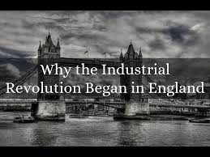

England - The "Mother" of Industrialisation
In England, absolutism and landlordism had been loosened earlier than in other European countries,
but in contrast to German countries, there was no longer any compulsory guild.
This encouraged the free expansion of trade, capital formation and technical renewal.
The insular situation of England made possible the trans-regional traffic and goods transport by sea ship between port cities.
Milestones were the invention of the steam engine (invention 1712 by Thomas Newcomen, crucial further development 1769 by James Watt),
the spinning machine (spinning Jenny), the mechanical loom, the machine tool and the Puddelverfahrens in the iron extraction.
The invention of the steam locomotive and the first public railways marked the end of the (first) Industrial Revolution in England.
Industrial meaning Today

Industrialization is also used as a term for today's standardization / automation of processes / processes.
As an example, the software development is called: During programming, no object is produced in the traditional sense.
The manufacture of the product software can be considered as a manual activity in many companies, as it is done differently and individually each time.
The aim of industrialization is to standardize common manufacturing elements so that they can be used more effectively, more productively and uniformly.
Only if the individual phases are characterized, for example, parts can be delivered as Offshoring activity.
At an early stage an industrial critique was expressed during industrialization, which later turned into ecological criticism.